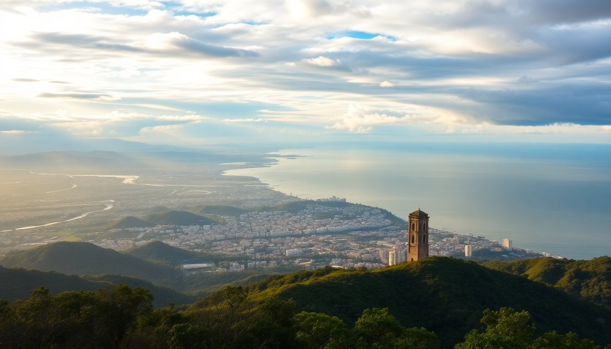

10 Days in Colombia: Bogotá, Medellín, Cartagena & Coffee

I landed in Bogotá with a backpack and a rough plan: hit four regions in ten days without losing my mind. Colombia’s size surprised me—flights between cities are necessary, not optional. After three weeks of research and two weeks on the ground, here’s the route that actually worked. No fluff, just what I’d do again.
Is ten days enough for Bogotá, Medellín, Cartagena, and the Coffee Region?
Tight but doable if you fly between cities. I spent two nights in Bogotá, two in the Coffee Region, three in Medellín, and three in Cartagena. That meant four internal flights, which sounds exhausting, but each leg was under an hour. The key is booking early morning flights so you don’t lose a full day. I used Avianca for Bogotá to Armenia and Viva Air for Medellín to Cartagena—both were on time and cheap (around $40–$60 per leg). Skip the bus between these regions; it’s 10+ hours and not worth the savings.
What should I do in Bogotá in two days?
Start with Monserrate on your first morning—take the cable car up before 8 a.m. to beat crowds and the fog. The view over the city is the real payoff. Then head to La Candelaria for the street art and museums. The Gold Museum is worth an hour, but skip the Botero Museum if you’re short on time—it’s small and the collection is limited.
- Lunch at La Puerta de la Candelaria for ajiaco—the chicken and potato soup is Bogotá’s signature dish.
- Dinner at Mesa Franca in Chapinero for modern Colombian food. Reservations required.
- Stay at Hotel de la Ópera in La Candelaria—it’s a converted 17th-century mansion with a courtyard. Quiet at night, which matters in that neighborhood.
On day two, take a Bogotá Graffiti Tour (free, tip-based) in the morning. It’s the best way to see the street art in La Candelaria and learn about the city’s political history. Afternoon is for Usaquén, a colonial neighborhood with a Sunday flea market—go even if it’s not Sunday, the plaza is calm and has good coffee shops.
How do I tackle the Coffee Region without a car?
Fly into Armenia (from Bogotá, 50 minutes), then take a taxi or shared van to Salento—that’s the town you want, not Armenia itself. I booked a coffee farm tour at Finca El Ocaso for 40,000 COP (about $10). The tour is two hours, you see the whole process from plant to cup, and the tasting is legit. No sugar-coating: some tours are touristy, but this one felt authentic.
- Stay at Hotel Salento Real—simple, clean, with a balcony overlooking the valley. Skip the hostels in town if you want sleep; the bars play reggaeton until 2 a.m.
- Hike the Cocora Valley in the morning. The wax palms are surreal—taller than anything I’ve seen. The loop takes 4–5 hours. Bring waterproof shoes; it’s muddy even in dry season.
- Eat at Brunch de Salento for arepas con huevo and fresh juice. Cash only.
One day in Salento is enough. On the second day, take a jeep to Filandia (30 minutes) for a quieter version of Salento—same colonial colors, fewer tourists. Then fly out of Pereira (45 minutes from Salento) to Medellín.
What’s the best way to experience Medellín in three days?
Medellín is my favorite city in Colombia. Start with Comuna 13 on a guided tour—I used Zippy Tour (60,000 COP), and the guide grew up in the neighborhood. The escalators, street art, and stories about the transformation are powerful. Don’t go alone; the context matters.
- Ride the Metrocable from San Javier station to Parque Arví. The views over the valley are better than any paid viewpoint, and the park has hiking trails and a market.
- Stay at Hotel Patio del Mundo in El Poblado—it’s affordable, quiet, and walking distance to Provenza for nightlife.
- Dinner at Carmen for tasting-menu Colombian food. The ceviche with coconut foam is unforgettable.
- Lunch at Mercado del Río—a food hall with 20+ stalls. Try the chorizo from La Chorizería.
On day two, take a Fernando Botero walking tour through Plaza Botero and the Museo de Antioquia. The plaza is chaotic—vendors, pigeons, and police—but the sculptures are worth it. Day three is for Guatapé and El Peñol. Book a shared van from Medellín (30,000 COP round trip). Climb the 740 steps of the rock—it’s sweaty but the view of the lake is unreal. Then walk through Guatapé’s zócalo-lined streets. Skip the boat tour on the lake; it’s crowded and slow.
Is Cartagena worth the hype, or is it a tourist trap?
Cartagena is both. The Walled City is beautiful—colonial balconies, cobblestones, bougainvillea—but the vendors are relentless. I learned to say “no, gracias” firmly and keep walking. The real magic is in Getsemani, the neighborhood just outside the walls. It’s less polished, more local, and has better food.
- Stay at Casa del Arzobispado inside the Walled City—a boutique hotel with a rooftop pool. Pricey but worth it for the location.
- Dinner at La Cevichería in Getsemani for fresh ceviche and coconut rice. Anthony Bourdain ate here, and it’s not overrated.
- Skip the Rosario Islands unless you want a packed boat and overpriced drinks. Instead, take a sunset walking tour of the city walls—free and stunning.
- **Eat street food: arepas de huevo from any cart near the Clock Tower. 3,000 COP each.
One full day in Cartagena is enough for the Walled City and Getsemani. Use the second day for a coastal walk to Castillo San Felipe de Barajas—the fortress is massive, and the tunnels inside are cool. Third day: relax. Find a bench in Plaza de la Trinidad in Getsemani, eat a mango biche with salt and lime, and watch the kids play football.
How do I get between these cities efficiently?
Fly. I booked everything on Avianca, Viva Air, or Latam. Here’s the route I used:
- Bogotá → Armenia (Coffee Region): 50 minutes, $40
- Pereira (Coffee Region) → Medellín: 45 minutes, $35
- Medellín → Cartagena: 1 hour, $50
- Cartagena → Bogotá (to fly home): 1.5 hours, $60
Book at least two weeks in advance for the best prices. Checked bags cost extra on Viva Air—pack light in a carry-on. For airport transfers, I used Easy Taxi or Uber (works in Bogotá and Medellín but not Cartagena). In Cartagena, negotiate the taxi price before getting in—20,000 COP to anywhere in the city.
FAQ
Is Colombia safe for solo travelers? Yes, with normal precautions. I traveled solo as a woman and never felt unsafe in the tourist areas. Don’t walk alone at night in La Candelaria (Bogotá) or the outskirts of Medellín. Use Uber in Bogotá and Medellín instead of street taxis. In Cartagena, stick to the Walled City and Getsemani after dark. Keep your phone in your front pocket and leave flashy jewelry at home.
Do I need to speak Spanish? It helps, but it’s not required. In Bogotá, Medellín, and Cartagena, many hotel staff and tour guides speak English. In the Coffee Region, less so. I got by with basic phrases and Google Translate. Learn “la cuenta, por favor” (the check, please) and “¿dónde está el baño?” (where’s the bathroom?).
What’s the best time of year to visit? December to March and July to August are the dry seasons. I went in February and had one rainy afternoon in Bogotá—the rest was sunny. Avoid October and November; that’s the wettest period. Cartagena is hot and humid year-round (30°C/86°F), so pack light clothes and a reusable water bottle.
Conclusion
- Fly between cities to save time—internal flights are cheap and short.
- Spend two nights in Bogotá for Monserrate and street art, two in Salento for coffee and Cocora Valley.
- Medellín needs three days for Comuna 13, Metrocable, and Guatapé.
- Cartagena is a two-day stop: one for the Walled City and Getsemani, one for the castle and relaxing.
- Book tours and hotels in advance, especially in Salento and Cartagena.